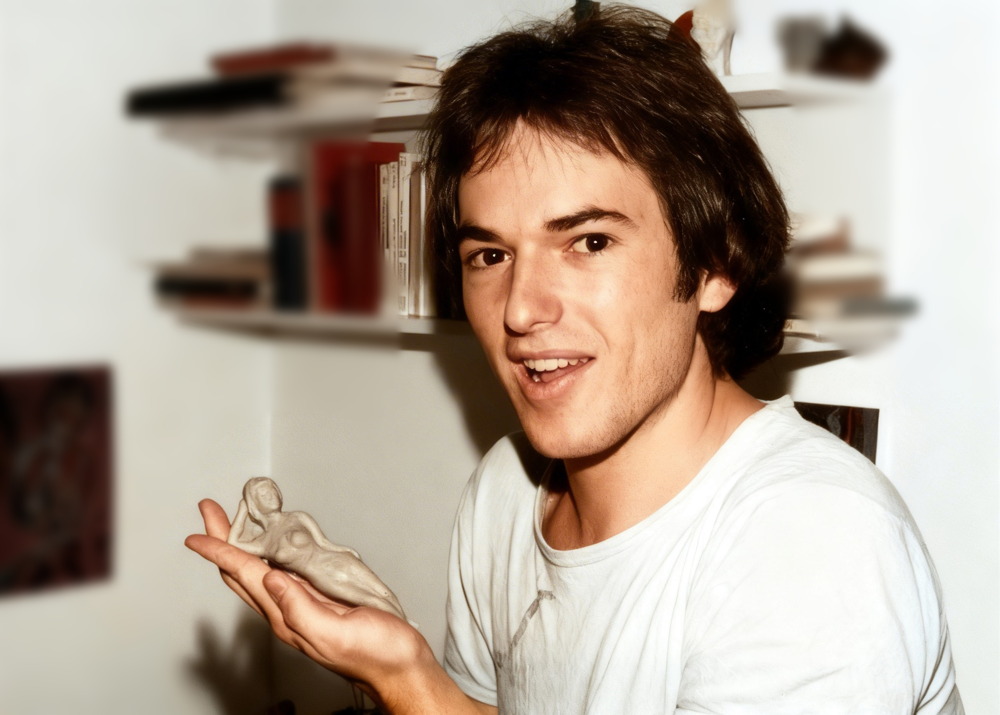

† 1976
Über Heiner habe ich in den Geschichten über meine Kindheit und Jugend bereits viel erzählt. Er war damals mein bester Freund. Wir besuchten gemeinsam das Gymnasium in Bernkastel, bis Heiner nach der mittleren Reife die Schule verließ. Ich blieb auf dem Gymnasium, er ging nach Frankfurt und begann dort eine Lehre beim Fernmeldeamt. Ziemlich bald merkte er jedoch, dass das auf Dauer nicht das Richtige für ihn war. Er besuchte eine Abendschule und begann, sein Abitur nachzuholen.
An den Wochenenden kam Heiner häufig nach Morbach. Wir hatten damals eine gemeinsame Plattensammlung und kauften unsere Langspielplatten zusammen. Heiner hatte in Frankfurt natürlich einen großen Vorteil. Dort kam er viel leichter an die neuesten Platten heran als ich in Morbach. So entstand mit der Zeit eine beachtliche Sammlung, die wir an den Wochenenden gemeinsam hörten.
Manchmal taten wir das auch bei den Amerikanern in einer der kleinen Hütten oben im Deckerdorf. Sie hatten die neuesten Stereoanlagen aus den USA. Da klangen „Dazed and Confused“ oder „Whole Lotta Love“ von Led Zeppelin noch mal ganz anders als auf unseren eigenen, scheppernden Lautsprechern. Und mit Haschisch im Blut klang das alles noch einmal einen Tick besser. Damals fühlten wir uns als Freaks. Die langen Haare hatten wir jedenfalls auch schon.

Irgendwann im Laufe der Zeit an der Abendschule bekam Heiner Beinschmerzen. Zunächst hatte ich davon gar nicht viel mitbekommen. Auch sonst wirkte er etwas kränklich. Es waren eher banale Infekte, die er aber nie mehr so richtig loswurde.
Eines Tages kam es zur Katastrophe. Heiner stieg im Elternhaus Unter der Lay die Treppe hinunter, sackte ein und stürzte. Er hatte fürchterliche Schmerzen und konnte nicht mehr auftreten. Im Krankenhaus stellte sich heraus, dass sein Oberschenkelknochen gebrochen war. Bei einem jungen Mann von etwa 21 Jahren ohne Trauma war das höchst ungewöhnlich.
Im Brüderkrankenhaus in Trier erkannte man bald, dass es sich nicht um eine gewöhnliche Fraktur handelte. Im Knochen befand sich eine Geschwulst, die dort nicht hingehörte und den Oberschenkel so stark geschwächt hatte, dass er ohne ein entsprechendes Unfallereignis gebrochen war. Heiner wurde deshalb an die Orthopädische Universitätsklinik in Frankfurt überwiesen.
Dort wurde er operiert. Soweit ich mich erinnere, erhielt er dabei auch ein künstliches Hüftgelenk. Die feingewebliche Untersuchung bestätigte, dass es sich um einen bösartigen Tumor handelte. Zunächst blieb jedoch unklar, um welche Tumorart es sich handelte und woher die Geschwulst ursprünglich gekommen war.
Schließlich fand man einen Tumor in der Ohrspeicheldrüse. Ich glaube, dort war auch eine kleine Schwellung zu erkennen. Dieser Tumor sollte nun ebenfalls entfernt werden. Vor der Operation hatte Heiner große Angst. Durch die Ohrspeicheldrüse verläuft der Gesichtsnerv. Wird dieser Nerv bei einer Operation verletzt oder irrtümlich durchtrennt, kann eine Hälfte des Gesichts gelähmt bleiben.
Fast noch schlimmer als die medizinischen Probleme war jedoch der damalige Umgang mit einer solchen Krankheit. Heiner war erwachsen, aber man sagte ihm nicht offen, was mit ihm los war. Vielleicht wollten seine Eltern ihn schützen. Besonders seine Mutter konnte mit der Vorstellung, dass ihr Sohn möglicherweise sterben würde, kaum umgehen. Niemand meinte es böse. Trotzdem entstand um Heiner herum eine Atmosphäre der Geheimniskrämerei.
Natürlich wusste er längst, dass er keine harmlose Erkrankung hatte. Er spürte, wie schlecht es um ihn stand. Trotzdem wurde hinter verschlossenen Türen gesprochen, während man ihm gegenüber so tat, als dürfe das Entscheidende nicht ausgesprochen werden.
Auch wir Freunde sollten mit Heiner nicht offen über seine Krankheit reden. Für mich war das eine schlimme Situation. Als Außenstehender wollte ich mich nicht über den Willen seiner Mutter hinwegsetzen. Gleichzeitig merkte ich, dass wir Heiner mit diesem Schweigen keinen Gefallen taten. Zwischen ihm und den Menschen, die ihm nahestanden, entstand eine Wand. Wir waren bei ihm, konnten aber nicht über das sprechen, was ihn am meisten beschäftigte.
Als es Heiner schon sehr schlecht ging, wollte er noch einmal Silvester von 1975 auf 1976 mit seinen Freunden feiern. Wir trafen uns bei ihm zu Hause. Heiner lag im Bett, und etwa zehn von uns saßen um ihn herum. Wir versuchten, fröhlich zu sein, machten unsere Scherze und gaben uns Mühe, eine möglichst normale Silvesterfeier daraus zu machen. Es war nicht leicht. Wir wussten alle, wie krank Heiner war. Es wurde sein letztes Silvester.
Ich besuchte ihn später noch einmal, als die Metastasen bereits überhandgenommen hatten. Eine davon lag hinter seinem Auge und drückte es nach vorne. Als ich ihn sah, kam er mir beinahe wie ein Fremder vor. Für ihn selbst muss es noch viel schlimmer gewesen sein. Er wusste, dass sein Leben zu Ende ging, und trotzdem sprach niemand offen mit ihm darüber.
Im Februar 1976 starb Heiner. Er war gerade einmal 23 Jahre alt.
Bis heute tut es mir leid, dass ich damals nicht offen mit ihm sprechen konnte. Ich hätte ihm gerne gesagt: „Ja, Heiner, du musst diesen schweren Weg gehen. Aber wir wissen darum, und wir stehen dir bei.“ Stattdessen blieb diese Wand zwischen ihm und uns.
Manchmal frage ich mich, ob meine spätere Berufswahl wirklich so zufällig war, wie ich lange geglaubt habe. Ich hatte mich nicht bewusst deshalb für die pädiatrische Onkologie entschieden, weil Heiner an einem bösartigen Tumor gestorben war. Trotzdem ist es bemerkenswert, dass ich später genau dort landete, wo ich mir damals einen anderen Umgang mit einem schwer kranken jungen Menschen gewünscht hätte.
In meinem Berufsleben habe ich versucht, es anders zu machen. Jugendliche und junge Erwachsene müssen wissen, woran sie sind. Sie müssen in die Gespräche und Entscheidungen einbezogen werden und dürfen nicht das Gefühl bekommen, dass hinter ihrem Rücken über sie getuschelt wird. Offenheit bedeutet dabei nicht, einem Menschen jede Hoffnung zu nehmen. Wenn die Wahrscheinlichkeit zu überleben nur zwanzig Prozent beträgt, kann man trotzdem zu diesen zwanzig Prozent gehören und wieder gesund werden. Aber auch eine solche Hoffnung kann nur auf Ehrlichkeit beruhen.
Das gilt ebenso für die Eltern. Wenn ein Kind oder ein Jugendlicher fragt: „Werde ich sterben?“, darf man dieser Frage nicht ausweichen. Man muss ehrlich antworten – in einer Sprache, die dem Alter und der Situation entspricht. Der Patient muss spüren, dass er nicht ausgeschlossen wird und den Weg nicht allein gehen muss.
Heiner war ein toller Mensch. Er ist viel zu früh von uns gegangen. Und so schlimm seine Krankheit war: Auch die Art, wie damals mit ihm darüber gesprochen – oder besser gesagt nicht gesprochen – wurde, ist mir bis heute geblieben.